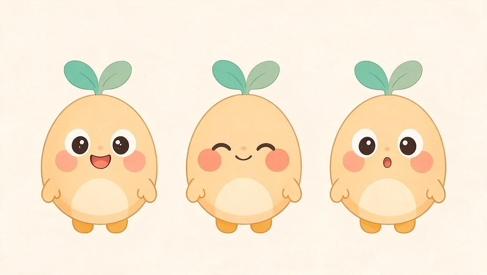
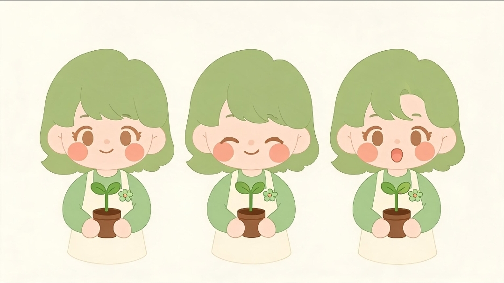

保育のプロが作る、見るほど育つチャンネル
「見せて終わり」ではなく「育ちにつながる」動画を届けます
発達段階に合わせた6つのシリーズを毎週お届け
手洗い・歯磨き・お着替え・トイレなど、生活の自立を後押し
手遊び歌・あいさつうたで語彙とリズム感を育てる
数字・図形・仲間分けで数量概念の基礎を楽しく
感情理解とクールダウンの方法を身につける
自然観察・五感あそびで探究心を育てる
保護者向け、現場発の子育てのコツを60秒で
2人のナビゲーターが、それぞれのシリーズを案内します
げんきで、まっすぐで、ちょっとおっちょこちょい。「いっしょにやってみよう！」と誘いかける、種と芽がモチーフの案内役。

落ち着いていて、決めつけず寄り添う。「ほいくしのワンポイント」で、声は監修者本人が担当します。
派手さではなく、専門性と安心感で選ばれています
現場経験のあるスタッフが企画・監修し、アニメキャラクターとして登場します
保育現場での経験を活かし、生活習慣・言葉・遊びの企画を担当。子供が「自分からやりたくなる」声かけを設計します。
発達に特性のある子供への支援経験を活かし、見通しの持てる構成・感覚配慮の演出を監修します。
実写の顔出しは行わず、案内役のアニメキャラクター「たねちゃん」「みどり先生」の声として登場します。